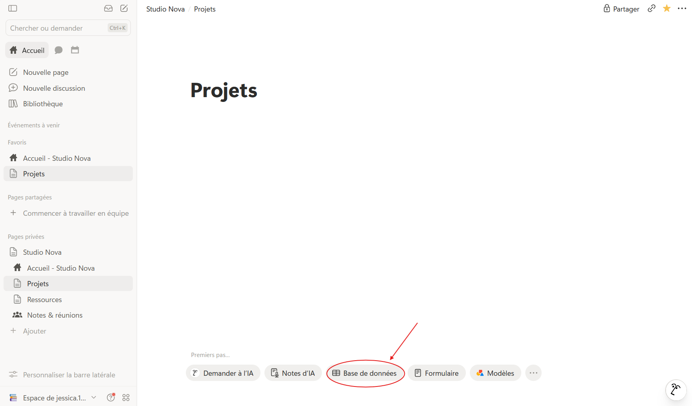
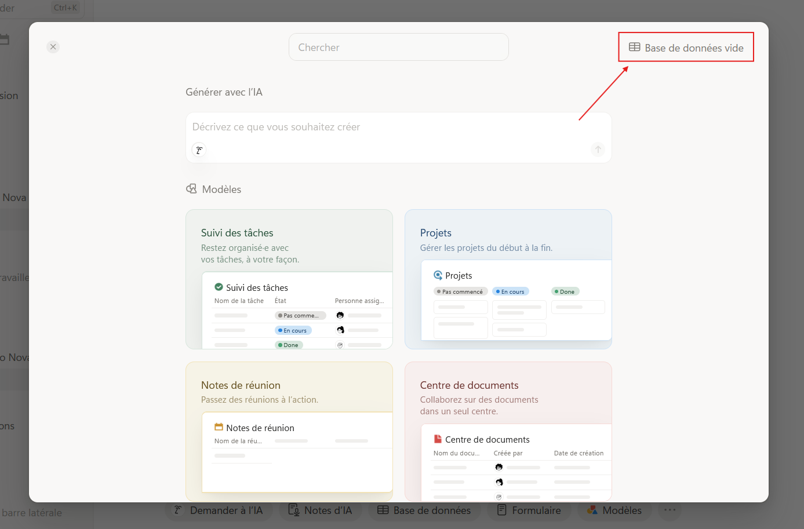
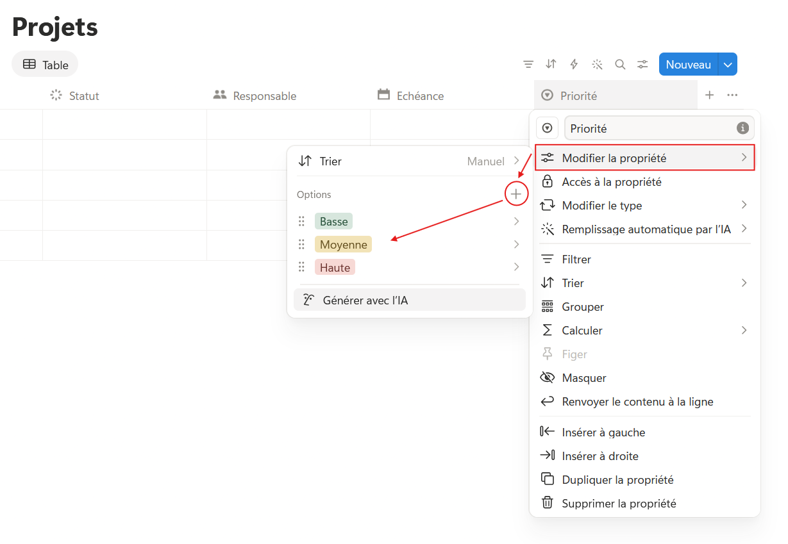
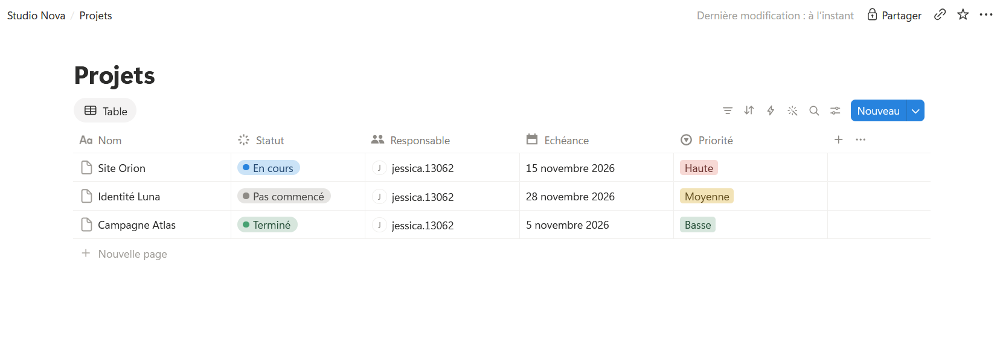

Créer la base Projets
Étape 1 : comprendre
Tu as tout ce qu'il faut : tu sais ce qu'est une base, qu'une ligne est une page, et quels types de propriétés choisir. Place à la construction de la vraie base « Projets » de Studio Nova.
Avant de cliquer, un bon réflexe : dessiner la base sur papier. Quelles informations veut-on voir pour chaque projet ? Emma et Lucas se sont mis d'accord sur cinq propriétés, pas plus :
| Propriété | Type | Options ou format |
|---|---|---|
| Nom | Titre | Le nom du projet |
| Statut | État | Pas commencé, En cours, Terminé |
| Responsable | Personne | Un membre de l'équipe |
| Échéance | Date | Le jour de livraison |
| Priorité | Sélectionner | Haute, Moyenne, Basse |
Deux façons de créer une base existent. Une base pleine page occupe toute une page : la page est la base. Une base intégrée (inline) est un bloc au milieu d'autres blocs. Le brouillon de la leçon 4.2, créé avec « / » au milieu de la page, était une base intégrée. Pour « Projets », on veut une base pleine page : la page « Projets » devient la base elle-même et ne contient que les projets. Son titre, « Projets », est aussi le nom de la base.
Une base pleine page est une page entièrement occupée par une base de données ; une base intégrée est un bloc dans une page.
Astuce : commence avec peu de propriétés. Il est facile d'en ajouter une plus tard ; une base avec quinze colonnes, personne ne la remplit.
Créer la base pas à pas
Avant de commencer : la propriété « Responsable » (type Personne) ne propose que les membres de ton espace Notion. Emma et Lucas n'en font pas partie : dans ton espace d'entraînement, choisis-toi toi-même comme responsable de chaque projet. Dans une vraie équipe, tu choisiras le bon collègue.
- Ouvre la page « Projets », vide depuis le module 2.
- Sans rien taper dans la page, regarde en bas : sous « Premiers pas… », Notion propose plusieurs options en gris. Choisis « Base de données ».

- Une fenêtre de modèles s'ouvre. En haut à droite, clique sur « Base de données vide ». La page « Projets » devient la base : son titre reste « Projets », et un tableau apparaît dessous.

- La base apparaît avec une colonne « Nom ». Si d'autres colonnes sont proposées par défaut, supprime-les : clic sur le nom de la colonne, puis « Supprimer la propriété ».
- Clique sur le + à droite des colonnes. Nomme la propriété « Statut » et choisis le type « État ». Les options « Pas commencé », « En cours » et « Terminé » sont déjà créées.
- Ajoute « Responsable », de type « Personne ».
- Ajoute « Échéance », de type « Date ».
- Ajoute « Priorité », de type « Sélectionner ». Pour créer ses options, clique sur le nom de la colonne « Priorité », puis sur « Modifier la propriété ». Dans la partie « Options », clique sur le + et crée les trois options : Haute, Moyenne, Basse.

- Saisis les trois projets : Site Orion (En cours, Emma, 15 novembre, Haute) ; Identité Luna (Pas commencé, Lucas, 28 novembre, Moyenne) ; Campagne Atlas (Terminé, Emma, 5 novembre, Basse). Comme responsable, choisis-toi toi-même (voir l'encadré au début).

- Les liens vers « Projets » créés aux modules 2 et 3 (les « Liens utiles » de l'accueil, la réunion du 3 novembre, ton favori) menaient à l'ancienne page. Ouvre-les : s'ils ne mènent plus à la base, supprime-les et recrée-les avec « @Projets », et remets l'étoile pour le favori.
Exercice · dans Notion
La base « Projets » de Studio Nova
- Transforme la page « Projets » en base pleine page : option grise « Base de données », puis « Base de données vide ».
- Vérifie les liens vers « Projets » et recrée ceux qui ne mènent plus à la base.
- Crée les cinq propriétés : Nom, Statut, Responsable, Échéance, Priorité.
- Saisis les trois projets de Studio Nova.
Résultat attendu : la page « Projets » affiche un tableau de cinq colonnes et trois lignes, conforme au plan de l'étape Comprendre. Dans la barre latérale, « Projets » est toujours rangée sous « Studio Nova ».
Étape 3 : vérifier
Objectif de la leçon
Tu as maintenant transformé la page « Projets » en base, avec ses cinq propriétés et ses trois premiers projets.
Choisis une réponse avant de valider.
Une base pleine page occupe toute la page : la page « Projets » devient la base elle-même.
Choisis une réponse avant de valider.
Une base trop chargée n'est pas remplie. On commence simple, et on ajoute une propriété quand un vrai besoin apparaît.